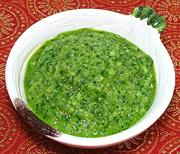

|
Green Mango ChutneyIndia - Raw Mango Chutney | ||||
| Makes: Effort: Sched: DoAhead: |
1-1/3 cups *** 37 min Yes |
Called "Raw Mango Chutney" in India, it is often mixed with plain natural yogurt as a dip (2 parts Yogurt to 1 part Chutney). This version is particularly delicious. | |||
|
11 1 1/2 1/2 1/2 2 1/3 1 |
oz in c t t t T |
Mango, unripe (1) Serrano Chili (2) Ginger root Cilantro Cumin Seed Sugar Salt Water |
Some variations use Mint Leaves instead of Cilantro. Make - (37 min)
|